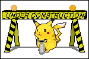

Bonus Stories, Prof. Abel's Picks, and more!
While I aim to make this site a resource and archive for those who seek to know more about this obscure series- I'm a man like any others and I have opinions! I can't be objective all the time when it comes to the Pokemon property at large and even when it comes to books in this very series. This area will be where I store those thoughts hehe :)
There are also pieces of these books I feel deserve there own special attention! Such as the mini-stories that litter the pages and also MY favorite specific parts of the scenes.
This page, like any other on this site, is a work in progress and will be ever changing- so look forward to that!!
Professor Abel's Picks!
Where I share my favorite little critters from this series! It's an EXTRA CHALLENGE for those who are looking for more difficulty while looking through these books :)
Featured Pick!

 B-B-B-Bonus Stories!
B-B-B-Bonus Stories!
Each book in this series has at least one hidden story progressing in its pages. On their own they are like cute comic strips, but its a lot of fun to find the key characters while looking through scenes :)


There's MORE books like these?
Here will be information regarding the "Let's Find Pokemon! Postcard Book", as well as the other (in my opinion) lower effort Pokemon "Where's Waldo"/"Eye-Spy" books


(IN PROGRESS) Let's Find The Artist!
What we know (and do not know)about the prolific and talented artist behind the "Let's Find Pokemon" series. Join me down my own personal research rabbit hole as I search for the man that started it all!

(IN PROGRESS)Behind the Research!
Assorted thoughts and recollections of how this site was made and what the research process has been like. What DO I learn as I scrounge for information about this series and its creators? Also, what do I watch and listen to while I work on this project?
(IN PROGRESS)Reviews and Recommendations!
What does the Professor have to say about assorted pokemon properties, fan games and roms, and all other things related to this site?
(IN PROGRESS)Prof. Abel's Pokemon!
While I haven't ever been one to "catch 'em all" I have collected quite a few in the past 2 deccades. Check out my favorites, my hall of fame teams, and my shinies here!